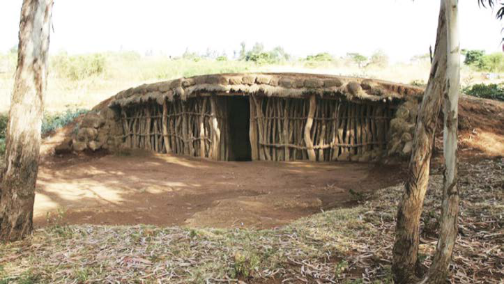
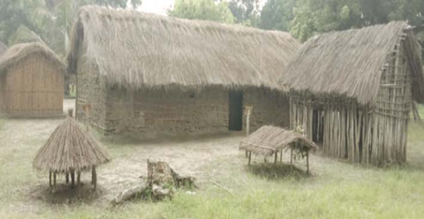

Kielelezo namba 14: Nyumba ya tembe ya jamii za Wairaqw
iliyojengwa kwa miti na udongo chini na juu
Zoezi namba 3
Swali la kwanza. Eleza tofauti zilizopo kati ya nyumba za tembe na zile za msonge.
Nyumba za banda
Nyumba za banda zina umbo la mstatili na zilijengwa kwa miti iliyokandikwa kwa udongo. Nyumba hizo ziliezekwa kwa miti na nyasi. Kielelezo namba 15, kinawasilisha mfano wa nyumba hizo.

Kielelezo namba 15: Nyumba ya banda
37